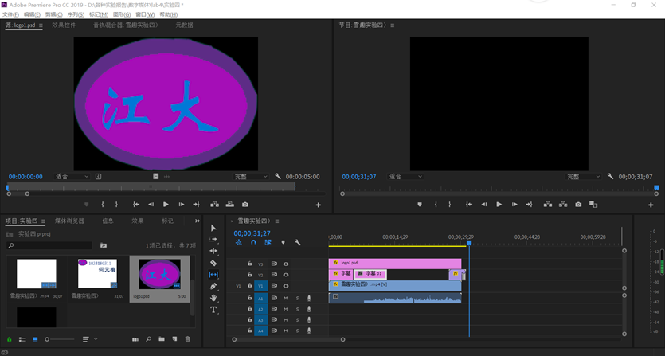
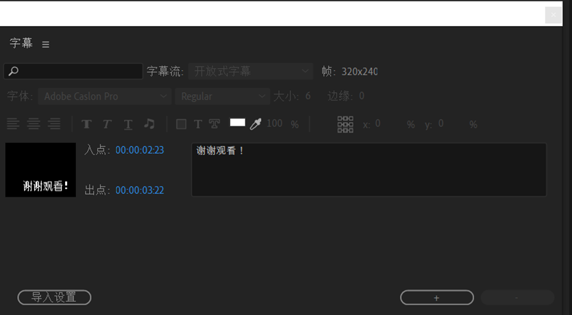

一、实验目的：
(1)了解Premiere的界面。
(2)掌握Premiere的基本操作。
(3)了解使用Premiere制作影视动画的过程。
二、实验内容：
（1）在雪趣字幕下方加上 设计：XXX（你的名字） 和 学号：XXXXX
（2）视频左上方加上图标，类似电视台标，可以写“江大”两字，或其他设计
（3）视频结束后，加上字幕，“谢谢观看”等，自己设计。
（4）其他内容和参考的雪趣.avi视频内容，可相同，也可以增加不同的视频特效和视频切换。
(5) 最后导出视频，同时保留源可编辑文件(.prproj)，完成实验报告。
三、实验环境
Windows10+Premiere Pro CC2019
四、实验步骤（对照截图具体说明，尽量详细）
(1)单击Premiere窗口菜单栏上的File（文件）→New（新建）→Title（字幕）命令，在弹出的Title（字幕）窗口中，在Size（大小）框里面填上320×240像素大小。如果需要背景，可以单独设置一个静态的title，背景颜色在属性中设置成白色，背景也可以是其他静态的图片，直接拖到轨道上即可（与title并行的其他轨道上）。
(2)用鼠标选择Title（字幕）工具栏中的文本工具，输入文字，在属性中选择适当的字体、样式、大小和颜色等。
(3)从菜单中选择Title（字幕）下的Roll/Crawl
Options（滚动字幕选项）选项，设置文字滚动的方向为Move Up（上移）。在这个Rolling Title Options（滚动字幕选项）对话框里面设置了4种字幕滚动方向，选中哪一个选项，则字幕的滚动方向就是该选项所代表的方向。设置完毕以后，单击OK（确定）按钮，然后把文件保存为titlel.ptl。
(4)由于新建立的节目是没有内容的，需要向Project（项目）窗口中输入原始片段。单击File（文件）→Import（导入）→File（文件）命令，或者在新建项目中单击右键，在出现的Import（导入）对话框中按下Ctrl键的同时选择素材片段title.ptl片段、雪趣.AIV


五、实验体会
这次实验不是很难，直接导入实验素材，然后添加几个字幕添，然后用photoshop制作一个简单的江大的logo导入，添加到音轨上就行。这个实验我是自己的电脑做的。我自己电脑里面的Premiere时Pro CC2019的，和实验室里的CS6的差别真的挺大的，实验一开始我就不知道字幕该在哪儿添加，百度了半天才找到，可真是难为死我了，花了些时间熟悉CC2019,然后利用课后的时间完成了实验，总体的还挺成功一次实验。 |